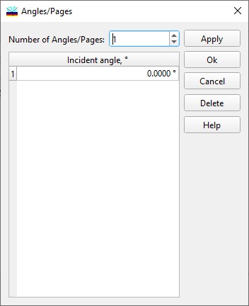

Angles of Incidence
Angles of Incidence
Navigation: OptiLayer Menu Commands > Data Menu > Target Editor >
Angles of Incidence
` <extended_argument_definition.html>`__ ` <target_editor.html>`__ ` <idh_modify_wavelengths.html>`__
You can initiate this dialog from the Target Editor in Spectral mode when you need to add or exclude angles of incidence at which targets are specified.

Specify the desired number of angles in the field labeled Number of Angles/Pages. This action will automatically add or delete the necessary number of rows in the list box. After editing the values of the angles, click the Apply button to implement the changes to the currently edited target. The Delete button allows you to delete the currently selected page or a range of pages. Clicking OK also applies the changes and closes the Angles/Pages dialog. If you wish to discard the changes, click Cancel. Additionally, you can utilize the Spreadsheet Editing Tools from the main toolbox for easier editing of angles and pages.

Note: The angle of incidence is always specified in the Incident Medium. For characteristics such as back reflectance and similar properties, it is important to compute the angle of the back reflectance using Snell’s Law if the Exit Medium differs from the Incident Medium.